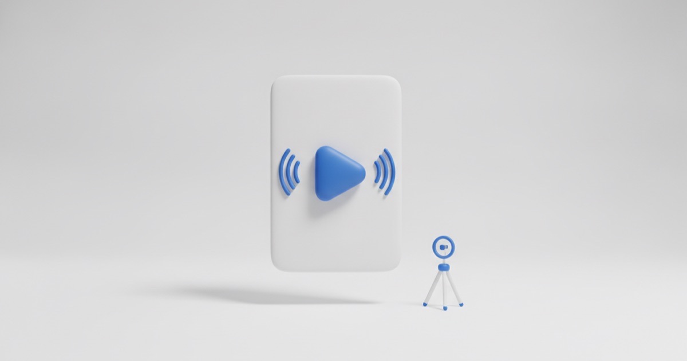

Как снимать короткие видео, которые набирают просмотры

Короткие вертикальные видео дают самый дешёвый охват среди всех форматов. Но большинство роликов у бизнеса набирает несколько сотен просмотров и останавливается. Разберём, что на это влияет.
Как алгоритм решает, кому показать ролик
Упрощённо: платформа показывает видео небольшой группе людей и смотрит на реакцию. Главный показатель — досмотры и повторные просмотры. Если люди уходят на второй секунде, ролик дальше не пойдёт, сколько бы хештегов вы ни поставили.
Отсюда все практические выводы.
Первые три секунды решают всё
В начале не должно быть логотипа, длинного приветствия и разгона. Работают:
- конкретный вопрос, который волнует зрителя;
- неожиданное утверждение;
- показ результата до объяснения;
- текст на экране, который обещает пользу.
Проверка простая: если убрать первые три секунды и ничего не изменится — они были лишними.
Структура ролика
- Крючок — 1–3 секунды, зачем смотреть дальше.
- Развитие — 10–30 секунд, суть без воды.
- Закрытие — вывод и понятное действие: написать, сохранить, посмотреть другой ролик.
Ролик длиной 15–30 секунд обычно даёт лучший процент досмотра, чем полутораминутный, — но только если тема действительно раскрывается.
Семь форматов, которые работают у малого бизнеса
- До и после — результат работы за 10 секунд.
- Ответ на частый вопрос — берётся прямо из переписок с клиентами.
- Разрушение мифа — «вам говорили так, на самом деле иначе».
- Процесс — как делается то, что клиент видит только в готовом виде.
- Ошибка — что люди делают не так и чем это заканчивается.
- Подборка — три способа, пять признаков, семь ошибок.
- Живой момент — кусочек рабочего дня без постановки.
Техника: достаточно телефона
Дорогая камера не влияет на просмотры. Влияют:
- Звук — самая частая проблема. Петличка за небольшие деньги решает её полностью.
- Свет — снимайте лицом к окну, а не спиной.
- Стабильность — штатив или опора, дрожащая картинка утомляет.
- Субтитры — большая часть аудитории смотрит без звука.
Как снимать регулярно и не выгореть
Снимайте партиями. Один съёмочный день в неделю на 4–6 роликов работает лучше, чем ежедневные попытки «найти время». Заранее напишите сценарии — короткие, по три строки: крючок, суть, финал.
Что не работает
- Погоня за трендовыми звуками без связи с вашей темой.
- Ролики, где первые пять секунд занимает заставка.
- Слишком много текста на экране — его не успевают прочитать.
- Удаление роликов, которые «плохо зашли»: часть видео набирает просмотры через недели.
Мы пишем сценарии и монтируем ролики под нишу клиента — если нужен стабильный поток видео, напишите нам.